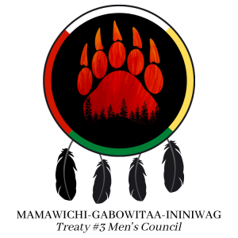
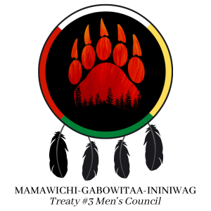

People
Treaty 3 is currently home to 28 Indigenous communities, containing approximately 25,000 people. Treaty 3's Grand Council is currently lead by the grand chief Ogichidaa Francis Kavanaugh, who was re-elected through a traditional election process on October 1st, 2019.
Councils
"Councils are a very important part of the governance structure of Grand Council Treaty #3. They bring the history of the past and the knowledge of the future. They are also the connection to ensure balance and equality for Gitiziminan (Elders), Oshkiniigig (Youth), Mizi'iwe Aana Kwat (2SLGBTQQIA+), Gaagiidoo-Ikwewag (Women) and Mamawichi-Gabowitaa-Ininiwag (Men) in the Treaty #3 Anishinaabe Nation." -Grand Council Treaty 3
Each council consists of members of Treaty 3 who have been chosen through a natural selection process, which consists of representations for each of the four directions. They were chosen for their expertise, skill, and traditional knowledge. Their role is to bring forth the history, unique needs, and voices of Elders, Women, Men, and Youth.
![2SLGBTQQIA+ Council Logo: Circle divided into four sections, red, white, yellow, green. Person in centre shown to mid chest with long dark hair, on loose on left of image, in braid on the right. Person's eyes are closed, left side is more youthful, right side has more wrinkles. Their hands are hovering around a rainbow tulip shaped symbol in the centre of the image. There are two feathers of each side of image, identical. On top of circle are the words 'Treaty #3 2SLGBTQQIA+ Council' and below are the words 'Mizi'iwe Anna Kwat'](images/2SLGBTQQIACouncil.png) 

Not shown: Elder's Council